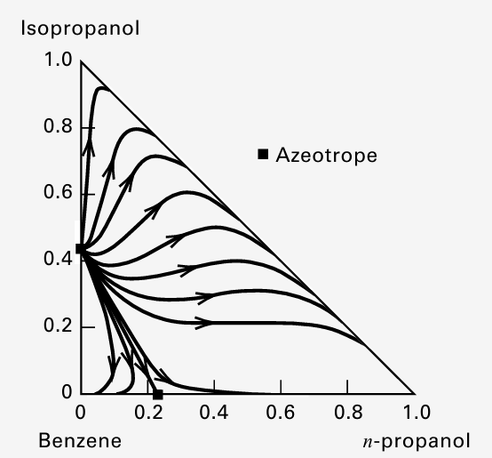
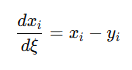
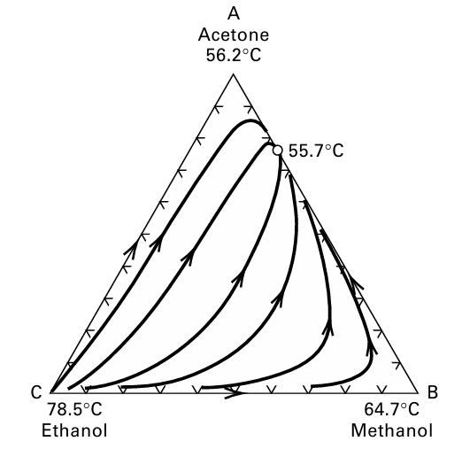
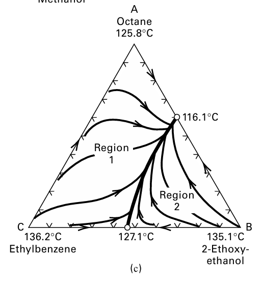
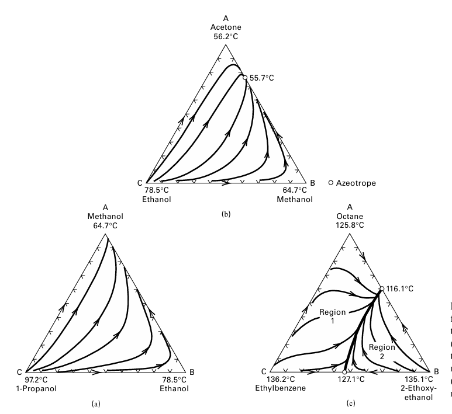
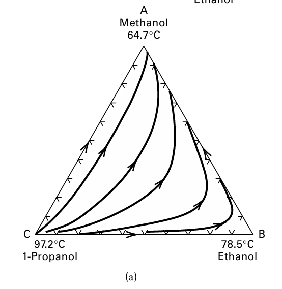
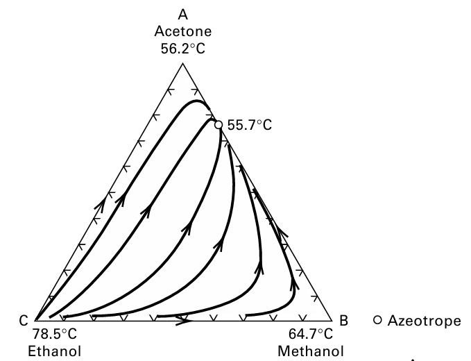
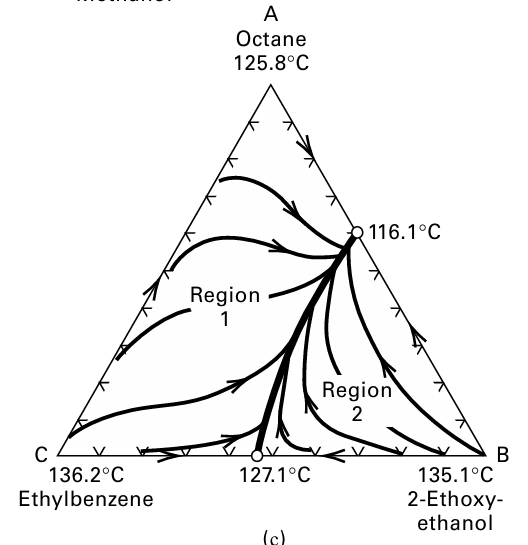

Residue curve map(잔류곡선도)에 대하여

잔류곡선도는 삼각형안에 정체불명의 선이 휘어있는 그림이다. 3성분 혼합물을 끓이면, 냄비 안에 남아 있는 액체 조성이 시간이 지나면서 어디로 이동하는가?”를 삼각형 그림에 그린 지도다.
여기서 residue는 증발하고 남은 액체, curve는 그 액체 조성이 움직이는 경로, map은 여러 출발점에서 그린 경로들의 전체 지도라고 보면 된다. simple batch distillation에서 still 안의 liquid-residue composition을 시간에 따라 따라가는 곡선이라고 보면 된다.
이게 무슨뜻인지 천천히 살펴보자.
Residue curve map은 보통 3성분계에서 쓴다.
A 순수
/\
/ \
/ \
/ F \
/ \
/_______\
B 순수 C 순수
각 꼭짓점은 순수 성분이다.
- A 꼭짓점: A 100%
- B 꼭짓점: B 100%
- C 꼭짓점: C 100%
- 삼각형 내부 한 점 F: A, B, C가 섞인 조성
- 변 위의 점: 두 성분만 있는 이성분 혼합물
즉 삼각형은 조성 지도다.
이제 냄비에 A+B+C 혼합물을 넣고 가열한다고 하자. 증류를 하면 더 잘 날아가는 성분, 즉 더 휘발성 큰 성분이 먼저 기체로 빠져나간다. 그러면 냄비 안에 남은 액체는 점점 무거운 성분, 높은 끓는점 성분 쪽으로 바뀐다. 예를 들어 A가 가장 잘 날아가고, C가 가장 안 날아간다면:
처음 액체: A 30%, B 40%, C 30%
끓이는 중: A가 많이 증발
남은 액체: A 20%, B 42%, C 38%
더 끓임: A 더 빠짐
남은 액체: A 10%, B 40%, C 50%
결국: C 쪽으로 감
이렇게 남은 액체 조성을 삼각형 위에서 계속 찍으면 선이 생긴다. 그 선이 residue curve다.

이때, 잔류액은 시간이 갈수록 낮은 끓는점 성분을 잃고, 높은 끓는점 성분 쪽으로 농축된다. 따라서 residue curve의 화살표는 보통 낮은 끓는점 성분/공비점 → 높은 끓는점 성분/공비점 방향이다.

Residue curve 하나는 특정 출발 조성 하나에서 출발했을 때 남은 액체가 움직이는 경로다.
그런데 출발 조성이 여러 개일 수 있다. 삼각형 안의 여러 점에서 출발시켜서 residue curve를 여러 개 그리면 전체적인 흐름이 보인다. 그 전체가 residue-curve map이다.
즉 지도처럼 보는 거다.
- 이 출발 조성은 어디로 가는가?
- 최종적으로 어떤 성분이 bottom으로 남을 가능성이 큰가?
- 어느 조성 영역에서는 어떤 제품을 만들 수 없는가?
- 공비점 때문에 증류가 막히는 경계가 있는가?
이걸 미리 판단하는 그림이다.
그런데 여기서 문제점은, 증류의 경우 공비점(azeotrope)이 생기면 어느 특정 조성에서 액체 조성과 증기 조성이 같아진다. 그러면 끓여도 조성이 더 이상 바뀌지 않는 특이점이 된다. 그래서 공비점이 있으면 residue curve map이 복잡해지고, 경우에 따라 distillation boundary, 즉 증류 경계선이 생긴다.
증류 경계선이 무엇인가? 어떤 특수한 residue curve가 삼각형 영역을 둘로 나누면, 그 선이 distillation boundary가 된다.
예를 들어 Region 1 | boundary | Region 2 이렇게 영역이 나뉜다고 하자. 이 boundary가 있으면, feed가 어느 region에 있느냐에 따라 만들 수 있는 distillate와 bottoms 조성이 제한된다.

n-octane / 2-ethoxyethanol / ethylbenzene 예시에서는 A-B 공비점과 B-C 공비점 때문에 삼각형이 두 region으로 나뉘고, Region 2에 있는 feed는 최고 끓는점 성분인 ethylbenzene을 bottoms로 만들 수 없다.
이게 무슨 말일까? 증류탑에서 feed F가 distillate D와 bottoms B로 나뉘면 전체 물질수지 때문에 세 점은 삼각형 안에서 일직선 위에 있어야 한다. D —— F —— B
하지만 residue curve map에서는 이것만 보면 안 된다. 추가로 봐야 할 것이 있다.
- D, F, B가 물질수지 직선 위에 있는가?
- D와 B가 가능한 distillation region 안에 있는가?
- distillation boundary를 넘어야 하는 분리는 아닌가?
- 고환류 또는 total reflux 기준에서 같은 distillation curve와 연결 가능한가?
그래서 residue curve map은 단순 물질수지보다 더 강한 제약을 준다.
이때 Bow-tie region이라는 것이 있다. Bow-tie region은 특정 feed에서 만들 수 있는 distillate와 bottoms 조성의 가능 영역이다. Feed F가 주어졌을 때 D가 있을 수 있는 영역과 B가 있을 수 있는 영역을 표시한 것이다. 만약 feasible product region을 묻는다면 가능한 제품 조성 범위 = bow-tie region안이며 그 밖은 일반 증류로 만들기 어렵다고 보면 된다.
여기까지가 Residue curve map인데, 이는 단순 증류에 해당한다. 만약 연속 증류인 경우 distillation curve map이 그려지며 차이는 다음과 같다.
Residue curve map vs Distillation curve map
| 기준 | 단순 batch distillation | 연속 증류탑, total reflux |
| 따라가는 것 | 냄비 안 잔류액 조성 | 탑 내부 단 조성 |
| 수학 형태 | 미분방정식 기반 | 단별 반복 계산 |
| 화살표 | 보통 낮은 끓는점 → 높은 끓는점 | 문헌에 따라 반대 방향으로 표시되기도 함 |
| 용도 | 증류 region, boundary, 가능 분리 판단 | residue curve map과 유사하게 가능 분리 판단 |
그럼 결론적으로, Residue curve map을 왜 배우는가? residue curve map은 공비증류/추출증류에서 “이 분리가 가능한지” 먼저 판별하는 지도이기 때문이다.
공비점 때문에 일반 증류가 막힘
→ entrainer/solvent를 넣음
→ 삼각형이 A-B-E 3성분계가 됨
→ residue curve map으로 분리 가능 region 확인
→ 가능한 공정 sequence 설계

이렇게 3가지의 레지듀 커브 맵을 보면서, 해석하는 방법을 알아보도록 하자. 그림을 보는 순서는 다음과 같다.
Step 1. 꼭짓점 확인
A, B, C가 각각 뭔지 본다.
A = low boiler?
B = intermediate boiler?
C = high boiler?
Step 2. 공비점 확인
변 위에 있는 점은 binary azeotrope다. 삼각형 내부에 있으면 ternary azeotrope다.
변 위 점: A-B 공비점, B-C 공비점 등 // 내부 점: A-B-C ternary azeotrope
Step 3. 끓는점 순서 확인
각 pure component와 azeotrope의 끓는점을 본다.
-가장 낮은 쪽: unstable node 후보
-가장 높은 쪽: stable node 후보
-중간: saddle 후보
Step 4. 화살표 방향 확인
Residue curve의 화살표는 보통 낮은 끓는점에서 높은 끓는점으로 간다.
Step 5. 굵은 경계선 확인
굵은 선이 있으면 distillation boundary다.
boundary가 있으면 region이 나뉨
feed가 어느 region인지가 중요함
Step 6. Feed 위치 확인
Feed가 Region 1인지 Region 2인지 본다.
Step 7. 가능한 D/B 판단
D, F, B는 물질수지상 직선이어야 하고, 보통 같은 distillation region 안에서 가능한 제품 조성을 봐야 한다.

이건 공비점이 없는 정상적인 3성분 증류를 의미한다. 끓는 점을 봤을 때 A<B<C 순서이다. 이때는 보통 탑 위쪽 distillate 쪽: A, 즉 methanol 쪽으로 감 / 탑 아래쪽 bottoms 쪽: C, 즉 1-propanol 쪽으로 감. 이때 중간 성분인 B는 얻기 어렵다.

이건 공비점은 있는데 boundary는 없는 경우이다. A-B azeotrope = 55.7°C가 형성되어 있다. 이 공비점의 끓는점이 55.7°C이다. Acetone 자체의 끓는점 56.2°C보다도 낮다. 그러니까 이건 minimum-boiling azeotrope이다. 이 경우 증류하면 위쪽 제품은 순수 acetone이 아니라 보통: Acetone-Methanol 공비점의 성분으로 나온다. 공비점 때문에 acetone과 methanol을 순수하게 완전 분리하기는 어렵다. 하지만 바운더리가 없기 때문에 삼각형 전체가 막혀서 region이 나뉘지는 않는다.
그래서 feed가 삼각형 안 어디에 있든, 물질수지 선을 적절히 잡으면 다음 같은 분리는 가능하다.
Distillate: acetone-methanol 공비혼합물
Bottoms: ethanol 쪽 또는 methanol-ethanol 혼합물
즉
-공비점 있음
-하지만 boundary 없음
-따라서 전체 삼각형이 하나의 증류 영역
-A-B는 공비점 때문에 순수 분리 어려움
-C ethanol은 상대적으로 분리 가능

위는 공비점 때문에 boundary가 생기는 어려운 경우이다.
A-B azeotrope = 116.1°C
B-C azeotrope = 127.1°C
이렇게 2개의 공비점을 볼 수가 있다. 이때 굵은 검은 곡선 = distillation boundary가 삼각형을 두 영역으로 나눈다. boundary가 생기면 증류로 가능한 제품 조성이 제한된다.
-Region 1에 있는 feed는 Region 1 방식으로만 분리 가능
-Region 2에 있는 feed는 Region 2 방식으로만 분리 가능
이게 무슨말인가? 예를 들어 Region 1에 있는 feed는 다음과 같은 분리가 가능하다.
Distillate: A-B azeotrope
Bottoms: A+C 혼합물또는
Distillate: A+B 혼합물
Bottoms: C, 즉 ethylbenzene 쪽egion 1에서는 최고 끓는점 성분인 C 쪽으로 bottoms를 만드는 경로가 가능하다.
하지만 영역2에서는? 이 영역에 feed가 있으면 문제가 생긴다. Region 2에 있는 feed는 최고 끓는점 성분인 ethylbenzene(C)을 bottoms로 만들 수 없다. 오직 가능한 것은
Distillate: A-B azeotrope
Bottoms: B+C 혼합물또는
Bottoms: B 쪽
Distillate: 세 성분 혼합물
C가 끓는점 제일 높은데 왜 Region 2에서는 C bottoms가 안 되냐? 이런 궁금증이 생길 수 있다. 그 이유는 전체 조성 공간이 boundary로 막혀 있기 때문이다.
정리하면
(a) 공비점 없음 → 그냥 쉬운 증류
(b) 공비점 있음 → 특정 순수분리는 막히지만 boundary는 없음
(c) 공비점 여러 개 → boundary 생김 → feed 위치에 따라 가능한 제품이 달라짐
정리:
Residue curve:단순 batch distillation에서 still에 남은 액체 조성의 시간 변화 경로.
Residue curve map:여러 residue curve를 삼각형 조성도에 모아 그린 지도.
화살표 방향:낮은 끓는점 성분/공비점 → 높은 끓는점 성분/공비점.
Unstable node:curve가 시작하는 점. 보통 가장 낮은 끓는점.
Stable node:curve가 끝나는 점. 보통 가장 높은 끓는점.
Saddle:curve가 접근했다가 멀어지는 중간 특이점. distillation boundary와 관련됨.
Distillation boundary:삼각형을 여러 distillation region으로 나누는 경계. 제품 조성 가능성을 제한함.
왜 중요? 공비계/비이상계에서 일반 증류 또는 enhanced distillation이 가능한지 미리 판단하기 위해 사용함.